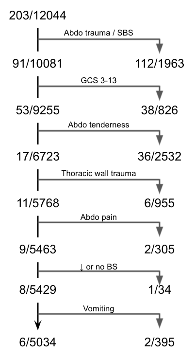

CDR vetting
press esc to navigate slides
stat 215 final project

logistics
- deadline: dec 12 - don't wait!!
- meeting with clinician: once week of 11/15, once week of 11/29
- optional group presentations after the deadline
- will we write a paper?
project overview
understanding the problem
- outcome/data are already selected for you
- what is important to capture in a CDR for this problem?
understanding the data
what features are reliable/useful/predictive?
modeling

writeup
- checking stability and judgement-calls
- comparison with baseline model
basic setup
fork the repo
make fork private + include your teammates

why are we using python 🐍?
python is better
R to python
indentation matters!
| python | R |
|---|---|
a=5 |
a <- 5 |
pip install packagename |
install.packages(packagename) |
import packagename |
library(packagename) |
listname[0] |
listname[1] |
setting up python
python --versionshould give 3.6 or higher (might need to typepython3)easier if you install things by making a venv
python3 -m venv rule-env // create the env
source rule-env/bin/activate // activate the env
installation
git clone https://github.com/Yu-Group/rule-vetting // clone the repo
cd rule-vetting
pip install -e .
editing in python
you can use any editor, maybe jupyterlab or pycharm

core data-science packages in python
pandas, numpy, sklearn, seaborn/matplotlib
pandas

numpy

seaborn / matplotlib
sns.lmplot(x="x", y="y", col="dataset", hue="dataset", data=df,
col_wrap=2, ci=None, palette="muted", height=4,
scatter_kws={"s": 50, "alpha": 1})

scikit-learn

scikit-learn example
from sklearn import tree
X = [[0, 0], [1, 1]]
Y = [0, 1]
clf = tree.DecisionTreeClassifier()
clf = clf.fit(X, Y)
clf.predict([[2., 2.]])
custom CDR packages
🔎 imodels

imodels usage
from imodels import RuleFitClassifier
model = RuleFitClassifier()
model.fit(X_train, y_train)
preds = model.predict(X_test)
preds_proba = model.predict_proba(X_test)
print(model)
package for facilitating PCS analysis, especially stability
vflow usage
- implemented in the dataset template - will help speed things up for you
project specifics
quick start
- look at the example project (iai_pecarn)
- look at the template files
- probably just start with some notebooks and then implement template functions
understanding the template

specifying judgement calls

ex function with a judgement call

tests
pytest --project <your_project_name>
e.g. pytest --project iai_pecarn
ex notebooks
CDR vetting
press esc to navigate slides
stat 215 final project